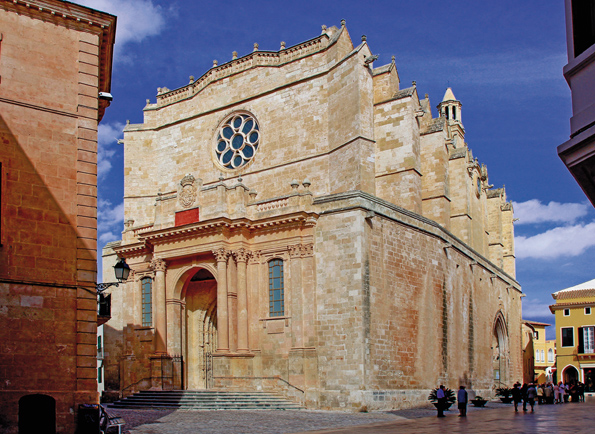
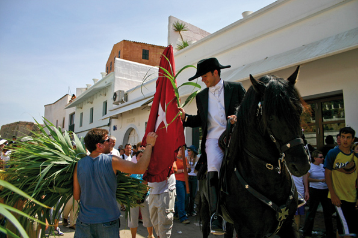
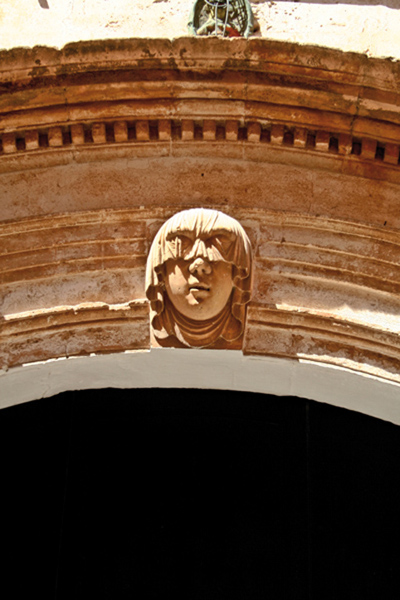
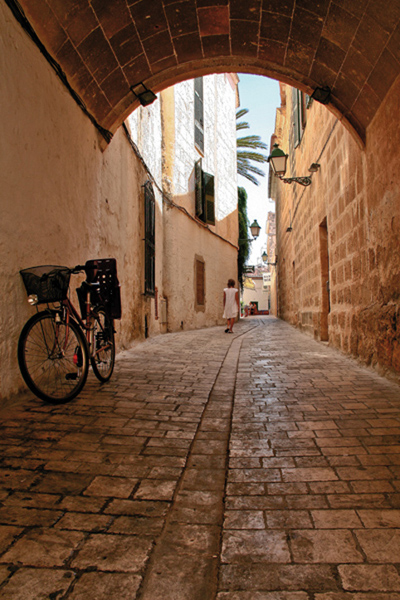

Ciutadella. Un dels nostres
Em torno a perdre pels carrers antics de Ciutadella, plens de llum, sota un cel in-tensament blau i molt prop d’una mar que ho ocupa tot, que blanqueja els arbres de sal els dies de tramuntana i oculta els fantasmes del meu cap. Vaig començar a perdre’m per aquí fa molts d’anys, quan en les nits calmades d’estiu les passes re-trunyien en els carrerons sense que destorbés el seu so el miol d’un gat o el lladruc angoixat d’un gos sense amo. Torno a tocar les parets inflades per moltes capes de calç, les pedres nues dels palaus, la pintura espellifada de les finestres velles; torno a pensar que aquest món petit, en el que tot hi cap, és donat a la fantasia, a la so-ledat, al desemparament i potser fins i tot a l’amor. Vegades he pensat que el temps s’aturava en aquesta petita ciutat encantada que em va veure néixer; he cregut que en creuar els seus carrers travessava una làmina invisible que comuni-cava amb l’eternitat, sempre el mateix laberint entranyable de carrerons, el so in-sistent de les campanes, les sotanes negres dels capellans, els mocadors de les dones endolades, velles en la flor de l’edat, les petjades sonores dels cavalls, la filera de veïns que acompanyava els morts... Ja no ho penso. He vist desaparèixer molts de rostres habituals, gent coneguda i desconeguda, parents de prop i d’enfora, tipus populars, pintorescs, característics que ja no vagaregen per aquests paratges, que potser només somriuen en les pedres tosques dels edificis, convertits en ombres, o potser en la llum d’aquest Ciutadella de llums i ombres, rondalles, canvis, tradicions i veritats inamovibles que ja ni tan sols existeixen. Obro els ulls, alço el cap i miro: el temps passa sempre, mai no s’atura, i només s’ha aturat en la meva imaginació.
Carrers silenciosos, deserts d’altre temps, quan segons diuen veus proverbials la ciutat s’adormia en la glòria dels alts llinatges que van deixar els conquistadors ca-talans, prenent alqueries i cases als pobladors àrabs. Carrers on hi ressonava matí i capvespre el martell de les treballadores per a fàbriques familiars amb un repicar etern damunt el marbre d’engomar. Se sentien també els clams de les mares cri-dant els seus fills, que s’entretenien jugant per les raconades d’aquests carrerons on mai no hi passava un sol cotxe. Potser sonava la remor contínua d’una màquina de cosir amb la qual les ajuntadores ajuntaven les diferents parts de les futures sabates. Tal volta una pilotada a la paret destorbava la pau dels vells que caminaven corbats sota les boines, recolzats als bastons, serrant una llosca de caliquenyo entre les dents. Els infants jugaven a futbol enmig del carrer; una al•lota venia bracejant enlaire i assegurava que nedava en una mar imaginària; altres vailets jugaven a mèrvols –marbles-, designant tots els moviments del joc amb paraules que ens van deixar els anglesos durant les dominacions del segle XVIII; d’altres s’ajuntaven amb les al•lotetes i saltaven a la xaranga o a la corda, s’amagaven en el joc d’amagar-se i rebutjaven els petits veïns en un altre joc amb paraules tan decebedores com torna’l, torna’l que no és nostro...
Cada matí, en sortir del col•legi per anar a esmorzar, després de la missa tediosa diària, les mares preparaven entrepans de pa amb tomàtec, de pa amb oli i sal o sucre als seus fillets, que se’ls menjaven pel camí, per a enveja dels gossos famè-lics. Alguns, els més afortunats, veien com les mares treien un cèrcol al fogó encès amb bon foc de carbó per torrar un tros de sobrassada agafat en una forquilla vella; la sobrassada, regalimant greix, però recremada pel foc, tenyia de vermell el pa blanc. Potser es tractava dels fills d’algun bijuter espavilat que fabricava collars i arracades amb pedretes de vidre, com les que serviren per enganyar els indis d’Amèrica o els negres d’Àfrica; aquells collars i adorns constituïen una indústria que va permetre retardar el turisme durant molts d’anys a l’illa de Menorca, allò i els productes del calçat; sense oblidar els pagesos, que criaven bestiar i feien formatge de gust fort, ple de contrasts, com els paisatges d’aquesta illa esventada, erosionada per les inclemències del temps, espoliada per les successives civilitzaci-ons que hi ha passat.
Els pagesos anaven cada diumenge a la posada; s’enfundaven el vestit d’anar mu-dats damunt les pells cremades pel sol, els cabells sospitosament rossos, els cossos alts i espigats i la parla pausada i com per a sí mateixos, una mica amb el posat d’actors d’anar per casa; amb l’aspecte romàntic estantís, la fe del carboner, el res-pecte profund al senyor de llocs i casats, els ulls damunt una sola al•lota que els acompanyaria fins que la mort els separés. Els senyors dels llocs repartits rere la conquesta del rei Alfons Tercer tenien potser un cotxe negre, de moviments tan lents com els dels pagesos, amb una finestreta ovalada darrera la capota inflada com el tendal d’un circ. Rebien els pagesos amb aire paternal, beneïen les seves unions, escoltaven els seus boleros i sons de guitarra --que caigue la luna, ay en medio de la plasa, que de las cuatro partes tu n’eres una--, anaven als batejos dels seus fillets, menjaven pastissets plens de conserva i bevien copes de vi dolç negant-se al progrés que pregonaven des de Mallorca els primers empresaris turístics.
Recordo que la primera vegada que vaig sentir parlar alemany a Santandria creia que se l’inventaven, de tan estrany que em sonava. Els primers turistes duien ca-mises estampades amb flors i calçons curts tan amples que en el dir del meu pare n’hi cabien quatre dedins i la cara els hauria caigut de vergonya si haguessin hagut de posar-s’ho a casa. Quan el policia en Barceló va dir a una estrangera que no podia dur biquini a la platja, que havia de dur un vestit de bany d’una sola peça, la turista li va dir alegrement que quina volia que es tragués. Un amic meu va comen-tar que a Cala Morell hi havia tres sueques que feien calça amb els pits enlaire, i que davant el núvol de curiosos deien esto ser normal allí, je, je… De sobte tot semblava normal, fins i tot el que va dir Adolfo Suárez: “Hay que elevar a la cate-goría de normal lo que simplemente es normal en la calle”. Dúiem un retard de mig segle i ho vam arreglar amb dos anys de pit i cuixa. De sobte aquests mateixos carrers, i les terrasses del port, es van omplir de vestits de tot color, d’expositors amb quincalla per al consum dels visitants, de borinots que parlaven italià amb les italianes, que semblaven mostrar anglès als anglesos –this is the table; yes, yes…-- i que feien de latin lovers… No sé si ho hem digerit mai, però el turisme és aquí, a l’abast de cada temporada, mal cuidat com la gallina dels ous de plom, depredador i depredat, convertit en l’única indústria que ens queda, o gairebé l’única.
Podem seure al port de Ciutadella una nit d’agost. Podem escoltar la remor de les converses entremesclades, dels idiomes mal apresos fins i tots pels parlants nadius, de les músiques rítmiques que s’esforcen per fer-se un lloc cada quatre passes, a cada bar, a cada restaurant, i de les embarcacions omplint les pauses amb el soro-llet dels seus pals bressolats per l’aigua. Quan la humitat de la nit ens enrigideixi els músculs i l’alcohol ens ompli el cap de boira podrem tornar deambular per aquests carrers enfosquits, encara oblidats de la mà de Déu com en temps dels pirates Barba-rossa, que avui s’han convertit en mercats de foteses. Oblidem el passat i caminem cap a un futur incert amb cada alba, amb amors d’un dia, balls de fandango apresos en acadèmies, sons de guitarró i castanyoles, productes típics d’artesania i llibres com aquest per a turistes que tal volta mai no sabran quina llengua es parla entre aquestes quatre parets velles on encara hi trobareu Ciutadella.